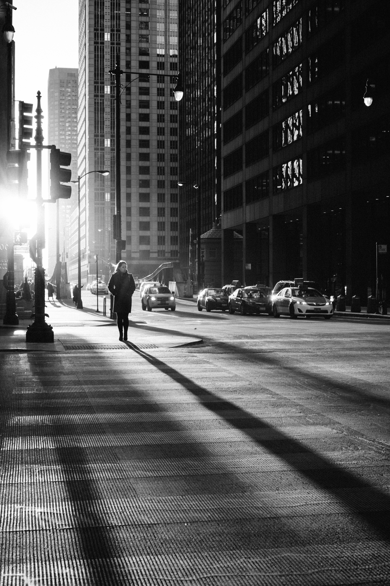
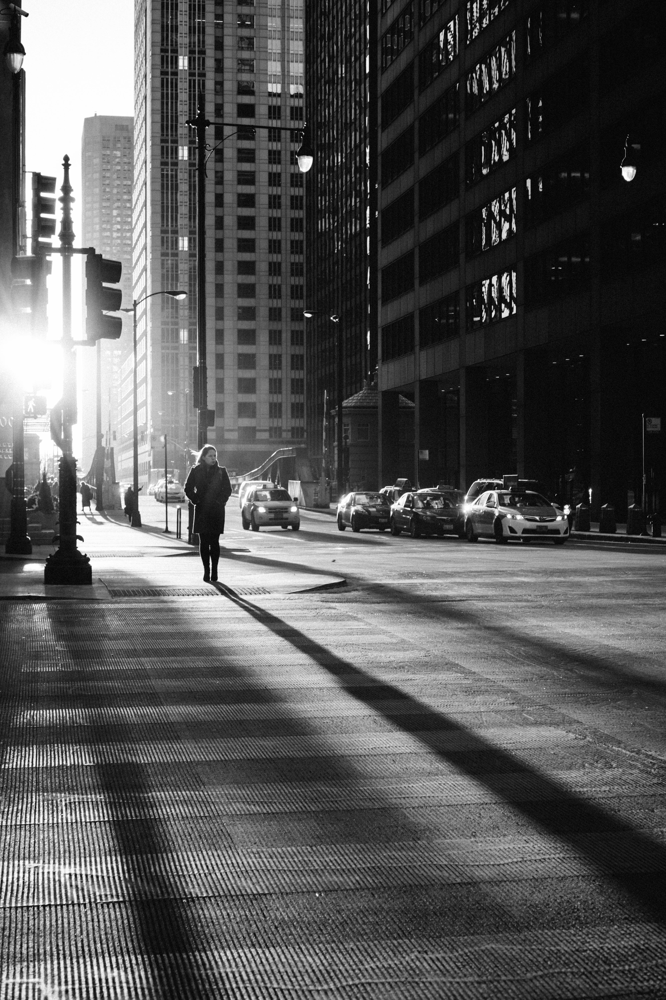
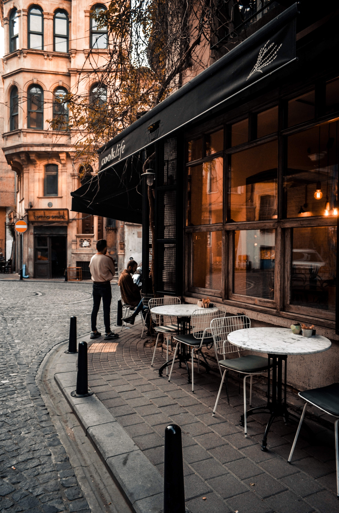
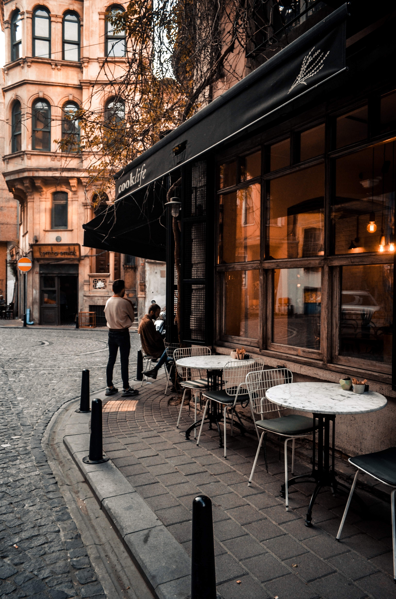

What is Street Photography?
Street photography is a genre of photography that captures candid and unposed images of people, usually in public places. It aims to capture the everyday moments and interactions of people in their natural environment.
Street photography is a genre of photography that captures candid and unposed images of people, usually in public places. It aims to capture the everyday moments and interactions of people in their natural environment.
Getting started in street photography can be challenging, but it can also be very rewarding. Here are some tips to help you get started:
Here are some examples of street photography:

 

 
